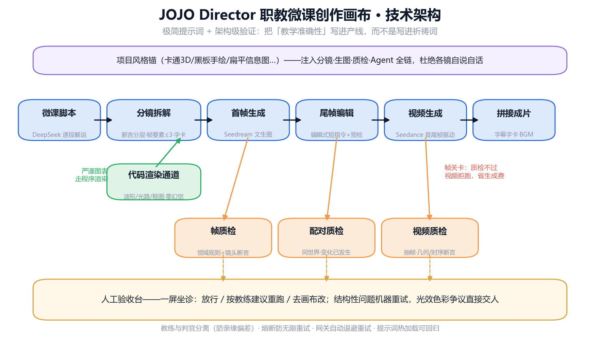

12 镜 · 2分08秒 · 11条AI视频＋1条代码渲染 · 63条同步字幕 · 全程无人工剪辑
Route Regret＝明知模型不擅长仍反复尝试造成的浪费。MAAO 路由引擎的目标就是把这 47% 归零——这正是下面这个模拟器做的事。
输入一句分镜描述，看路由引擎如何根据实测能力地图决定生产路径。 规则与线上产线同源（capability_map.yaml），纯前端运行。

需要：Python 3.11+ / Node 18+ / ffmpeg / 火山方舟 API Key（自备，一部微课约 ¥30-60）
git clone https://github.com/Baggio200cn/jojo-director.git cd jojo-director/backend pip install -r requirements.txt cp .env.example .env # 填入 ARK_API_KEY python -m uvicorn app.main:app --port 8000 # 另开终端 cd ../frontend && npm install && npm run dev
完整文档：README · 方法论：MAAO Runtime Specification v0.3